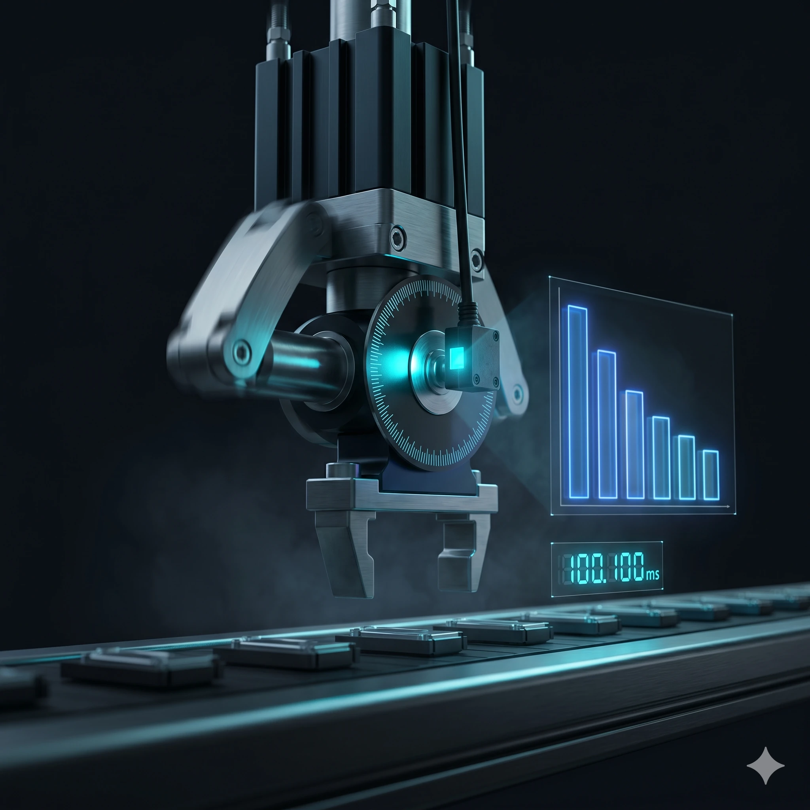
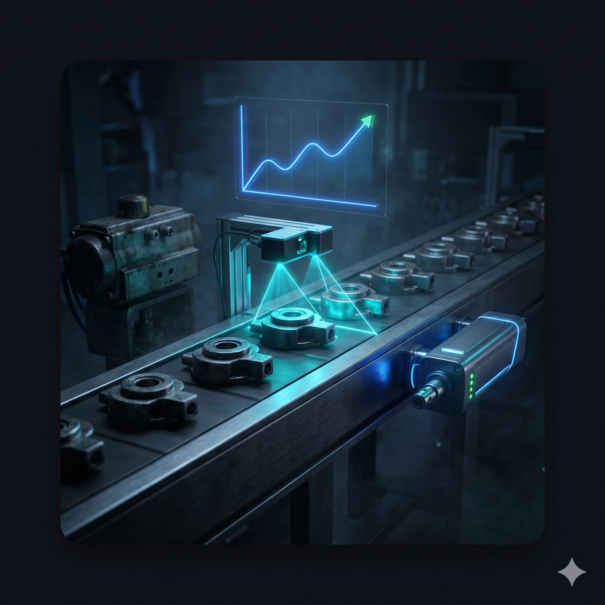
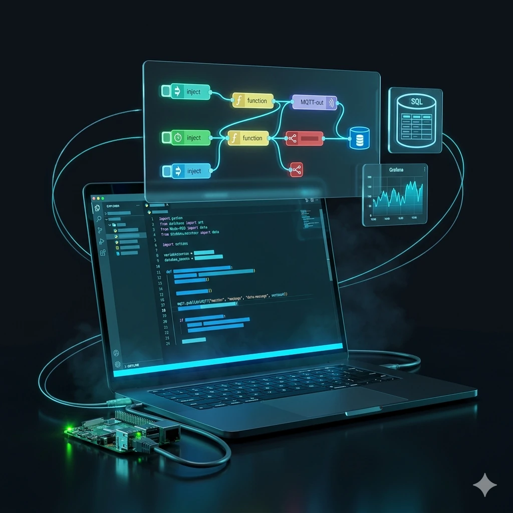

Kein eigenes Entwicklungsteam? Ich bin Ihres.
Freiberuflicher Automatisierungsingenieur aus Paderborn – ich unterstütze kleine Maschinenbauer bei SPS, Inbetriebnahme und Cloud-Anbindung.
Freiberuflicher Automatisierungsingenieur aus Paderborn – ich unterstütze kleine Maschinenbauer bei SPS, Inbetriebnahme und Cloud-Anbindung.
Ein Ingenieur, der Ihre Maschine versteht – und genau dort einspringt, wo Ihnen die Kapazität fehlt.

Ich bin Christoph Korn, Elektroingenieur mit Schwerpunkt Automatisierungstechnik und über 12 Jahren Praxis aus echten Produktionsumgebungen. Hauptberuflich bin ich in der Industrieautomation tätig – freiberuflich ergänze ich kleine Maschinenbauer und KMU, die kein eigenes Entwicklungsteam haben.
Ob Siemens, Beckhoff oder CODESYS – ich bin nicht auf einen Hersteller festgelegt und finde die passende Lösung für Ihre Technik. Von SPS-Programmierung über Inbetriebnahme bis zur Cloud-Anbindung (AWS, Azure). Ergänzt durch Kompetenzen in IIoT, industriellen Netzwerken und Robotik für Messe- und Demonstrator-Projekte mit KUKA und ABB.
Erkennen Sie eine dieser Situationen wieder? Dann kann ich helfen.
Kein Support, keine Teile mehr? Ich migriere Ihre Steuerung auf ein modernes System.
Von der Programmierung bis zur Inbetriebnahme – alles aus einer Hand.

Neuprogrammierung, Erweiterung, Migration

Messe-Exponate, Demonstratoren, Kleinprojekte

Aufbau, Fehlersuche, Optimierung

Zykluszeit-Analyse, Ablaufoptimierung

Stillstandsreduktion, Prozessverbesserung

Frequenzumrichter, Servo, Motor

OPC UA, MQTT, AWS, Azure

Industrielle Netzwerke, PROFINET, EtherCAT

HMI, Visualisierung, Touch-Panel

Übergabe, Schulung, Handbuch

Python, Node-RED, SQL – ergänzend zu SPS-Projekten
SPS-Programme für jede Maschine – neu, erweitert oder migriert.
Ich bin nicht auf einen Hersteller festgelegt – ich finde die Lösung für Ihre Technik.
TIA Portal, S7-1500/1200/300/400, STEP 7, WinCC, SINAMICS, SIMOTION

Prototypen-Produktionsanlagen

Pulver- & Baustoffabfüllung

Sonder- & Serienmaschinen

Futtermittel, Smart Farming, IoT

Klima, Lüftung, Kälte

Obermaschinerie, Antriebe, Effekte
Reinraum, Wafer-Handling, Prüfstände – Prototypenfertigung.
Dieser Platz ist noch frei – hier könnte Ihre Bewertung stehen!
Werden Sie einer meiner ersten Kunden und sichern Sie sich den besten Platz auf dem Treppchen.
Schildern Sie mir kurz Ihr Vorhaben – ich melde mich zeitnah mit einem konkreten Vorschlag.
Was Sie erwartet: